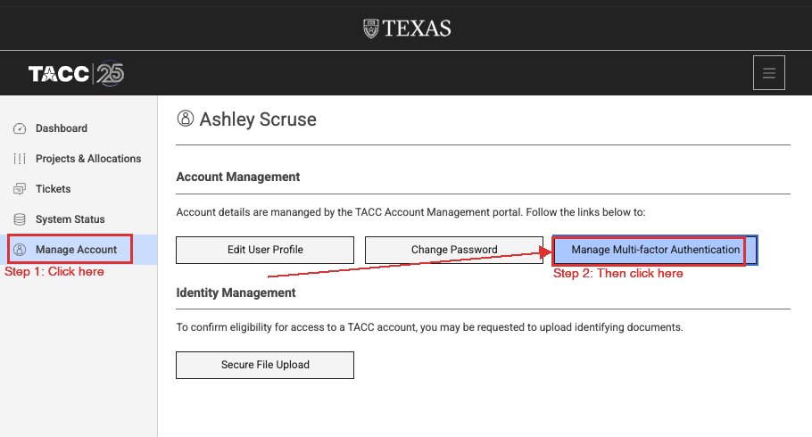
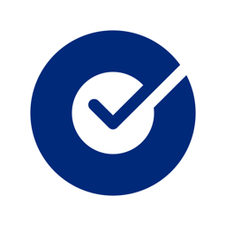
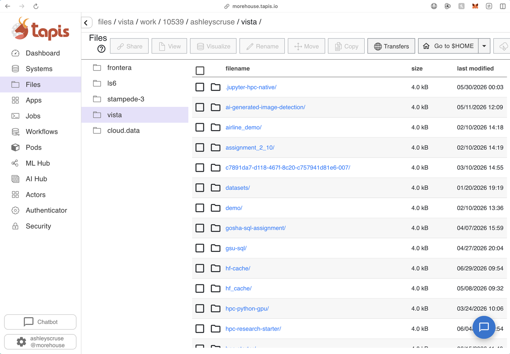

Morehouse Supercomputing Facility/HPC Office Hours/TACC Vista
Getting onto Vista
One goal: get you onto the machine, from the terminal or from Tapis, and leave you on a
real compute node. Everything past that is a different day.
Systemvista.tacc.utexas.edu
AllocationTRA25001
CPU queuegg · 144 cores/node
GPU queuesgh · gh-dev
ArchitectureArm (not x86)
Part 1
Get access
Before anything else, and the part that has to happen ahead of the session rather than during it.
01Get access
Nothing else on this page works until this is done: request access, make the account
from the invitation email, then set up multi-factor. Having a TACC account and being on the
allocation are two different things, and people conflate them constantly.
Start with the request form
Everything begins here. Fill this out and I add you to the project on our end.
You only do this once. If you are not sure whether you already have, run
/usr/local/etc/taccinfo on Vista, or just ask me.
Then use the invitation link, not the sign-up page
Once the form is in, TACC emails you an invitation with the subject
"TACC Project Invitation Action Required: Account Request". Open that email and click
through from there.
Do not register separately
Going to the TACC site and making an account on your own produces an account with no project
attached, and then nothing you submit will run. The invitation link is what ties your new
account to the allocation. If you already made one that way, tell me and I will link it up.
On the registration form, use your institutional email, and pick a username you will still be
happy with in five years. It is permanent and it is what you type at every login.
Set up multi-factor before your first login
TACC requires MFA on every login, including SSH. Set it up first or your first connection
attempt will simply fail. Two routes to the same page:
Option AThe sidebar item you are looking for. Once paired, this page shows your authenticator app and an Unpair button.
Option B. From portal.tacc.utexas.edu,
click Manage Account in the sidebar, then Manage Multi-factor Authentication.

Option BTwo clicks from the portal: Manage Account, then Manage Multi-factor Authentication.
On that page, pair Okta Verify. It is the only authenticator app we use.

Okta VerifyOkta, Inc.
Pairs cleanly and keeps working. Install it on your phone: iOS ·
Android
The only app we use
NEVER use SMSDo not pair text-message codes. If you already paired SMS or another app and logins are failing, unpair it on the MFA page and pair Okta Verify instead.
Once you are paired, test it: log out of the portal and back in. Do that before you try SSH, so that
if something is wrong you find out in a browser rather than at a password prompt.
Confirm you are actually on the allocation
After your first login, run /usr/local/etc/taccinfo (or just allocations).
If TRA25001 appears with hours remaining, you are set. An empty list means you have an
account but no project, which is the one thing I have to fix on my end.
Manage your account
After setup, portal.tacc.utexas.edu is what you come back to: check your project
membership, see how much allocation is left, or re-pair a lost authenticator. Nothing you do
there runs on Vista.
Part 2
Get on the system
Two doors onto the same machine. Pick whichever one gets you on today.
02Two ways on, and why you would pick each
Vista has two front doors. They all reach the same machine and the same files. What differs is how
much you have to install, where you land, and how much control you get once you are there.
Terminal (SSH)
vista.tacc.utexas.edu
A text connection from an app already on your computer. This is the real machine with nothing
in between.
The benefitEverything works here. Nothing is hidden from you, and every
instruction you will ever read about HPC assumes it.
Morehouse Tapis
morehouse.tapis.io
Our own tenant, with a GPU Jupyter app already built and pointed at Vista.
The benefitThe settings are made for you, and the same interface can be
driven from code later when you want to automate.
Terminal
Tapis
To install
Nothing on Mac or Linux. On Windows, Git Bash.
Nothing
You land on
A login node Ask for a compute node yourself.
A compute node
You get
A command prompt. All of it.
Jupyter on a GPU node.
Set-up cost
Highest. It is also the one that keeps paying.
One-time key check, then lowest.
Best for
Anything real, and everything you will read about later.
Our GPU work, and automating later.
You do not have to pick one forever
Most people end up using both: Tapis for browsing files and notebooks, and the terminal
for everything else. The files are the same either way: upload something through Tapis and it is right there in the terminal. Try whichever one gets you on the machine today. You can learn the other
next time.
03The terminal is an app you open
There is no website you go to for this part. The terminal is a program already sitting
on your computer, the same way Word or Chrome is. Find it, open it, and leave it open.
yourname - -zsh - 80×24
Last login: Mon Aug 25 09:12:04
yourname@MacBook-Pro ~ %
TerminalmacOS · built in
To open it: press Cmd + Space, type Terminal,
press Enter. It also lives in Applications → Utilities.
Ready to goSSH is already installed. Nothing to set up.
MINGW64:/c/Users/YourName– ☐ ×
YourName@DESKTOP-4KJ21MINGW64~
$
Git BashWindows · recommended
To install: get Git for Windows from
git-scm.com/download/win and accept the defaults.
Then press Windows, type Git Bash, and open it.
Start here on WindowsIt avoids the connection error in
section 04, and gives you the same commands everyone else is running.
▮ Windows PowerShell– ☐ ×
Windows PowerShell
Copyright (C) Microsoft Corporation.
PS C:\Users\YourName>
Windows TerminalWindows · PowerShell
To open it: press the Windows key, type
Windows Terminal on Windows 11 or PowerShell on Windows 10, and click it.
May fail on TACCSome builds hit
Corrupted MAC on input. If yours does, switch to Git Bash.
yourname@ubuntu: ~– ☐ ×
yourname@ubuntu:~$
TerminalLinux · built in
To open it: usually Ctrl + Alt + T, or find
GNOME Terminal or Konsole in the application menu.
Ready to goSSH ships with essentially every distribution.
Those are the default appearances. Colours and fonts change if you or your IT department have
themed the app; the prompt text is what identifies it.
Windows only: if ssh is not recognized
If ssh -V answers The term 'ssh' is not recognized, the OpenSSH client is
switched off. Turn it on in Settings → Apps → Optional Features → Add a feature,
search OpenSSH Client, install, then close and reopen PowerShell.
Or run PowerShell as Administrator and use
Add-WindowsCapability -Online -Name OpenSSH.Client~~~~0.0.1.0.
On a locked-down work laptop where neither is allowed, use MobaXterm instead.
Windows alternatives, if you want one
Tool
Best for
Git Bash
Start here. A real bash shell, the same ssh as macOS and Linux, and it is not affected by the Corrupted MAC error.
Windows Terminal
Fine when it works. Some builds fail with Corrupted MAC on input.
MobaXterm
New to the command line, or you want a drag-and-drop file browser in a side panel. Free from mobaxterm.mobatek.net.
WSL
Already comfortable in Linux. Install Ubuntu from the Microsoft Store.
PuTTY
Older or heavily restricted machines. Free from putty.org.
Pick one and stay on it. Switching tools halfway through a workshop is how people lose an hour.
04What logging in actually looks like
The command is identical on all three systems. Only the window around it changes.
Type your username in place of the highlighted part.
yourname - ssh - 80×24
yourname@MacBook-Pro ~ %ssh yourusername@vista.tacc.utexas.eduThe authenticity of host 'vista.tacc.utexas.edu' can't be established.
Are you sure you want to continue connecting (yes/no/[fingerprint])?yesPassword:TACC Token Code:------------------------------------------------------------
Welcome to the Vista Supercomputer
------------------------------------------------------------login1.vista(1)$
macOS and Linux. The prompt on the last line ends in
login1, which tells you that you are on a login node, not a compute node.
See section 06 for why that matters.
Windows. Once you are connected, the prompt changes from
PS C:\Users\YourName> to the TACC prompt. From that point on you are typing
Linux commands, not PowerShell commands, and every instruction below applies unchanged.
Nothing appears when you type your password
No characters, no dots, no asterisks. The cursor does not move. This is deliberate, and it is the
single most common reason a new user thinks the terminal has frozen. Type it carefully and press Enter.
The same applies to the MFA token on the next line.
The host fingerprint question only appears on your very first connection from that computer.
Type yes, in full, and you will not be asked again.
Windows: "Corrupted MAC on input"
This one is common enough that it has its own heading. You answer yes to the
fingerprint question, and instead of a password prompt you get this:
Windows PowerShell– ☐ ×
PS C:\Users\YourName>ssh yourusername@vista.tacc.utexas.eduThe authenticity of host 'vista.tacc.utexas.edu' can't be established.
ED25519 key fingerprint is SHA256:6NlyjFyyGSDXrIeyKa1S6f01Y4T7CUfWfbqUGxn+Euw.
Are you sure you want to continue connecting (yes/no/[fingerprint])?yesWarning: Permanently added 'vista.tacc.utexas.edu' (ED25519) to the list of known hosts.Corrupted MAC on input.
ssh_dispatch_run_fatal: Connection to 64:ff9b::8172:3ec9 port 22: message authentication code incorrectPS C:\Users\YourName>
This is not your account, your password, or your typing
It is a bug between certain Windows OpenSSH builds and the network path to TACC. Retrying will
not fix it, and neither will resetting your password. Trying a different TACC hostname will not
fix it either. Switch terminals instead.
Run the same command as before:
ssh your_username@vista.tacc.utexas.edu
That is the whole fix. Everything else on this page works identically from Git Bash.
Or use PuTTY
From putty.org, download the 64-bit MSI installer and run it
with the defaults.
Open PuTTY. In Host Name enter vista.tacc.utexas.edu. Leave Port at
22 and Connection type on SSH.
Click Open. A PuTTY Security Alert about the host key appears the first time. Click
Accept.
At login as: type your TACC username, then your password and MFA code. The same
silent-input rule applies.
Other TACC systems
Our allocation is on Vista. Same command, different hostname, if you separately have time
on another TACC system, but everything on this page is written for Vista.
We run our own Tapis tenant at morehouse.tapis.io.
It is two things at once: a web interface with our GPU Jupyter app already built, and an API underneath
for driving Vista from code.
Launching Jupyter on a GPU node
In the Tapis UI, find the jupyter-hpc-native app and submit it with the JSON form.
The whole request is one line, because the app already knows the system, the queue, and the setup script.
Add "maxMinutes": 60 to cap the session at an hour. The default is 120, and a shorter
session spends less of the allocation.
Do this once, before your first submission
The app copies a setup script from a storage system called cloud.data. Without credentials
there, your job hangs on STAGING_INPUTS forever and never fails visibly.
To check: open Files in the Tapis UI, select cloud.data, browse to
/corral/tacc/aci/CEP/applications/v3/interactive-template/tap, and confirm you can see
tap-ilogin.sh. If you get SSH_POOL_MISSING_CREDENTIALS, your TMS keys need
verifying first.

TapisThe systems column is where you switch to cloud.data for the check above. Apps and Jobs in the sidebar are where you submit and then watch the run.
Once the status reads RUNNING, give it another minute or two for the node to boot the Jupyter
server, then open the job's tapisjob.out file. Near the top is the line you need:
TACC: JUPYTER_URL is https://vista.tacc.utexas.edu:60707/?token=cb137c89...
Copy that whole URL, token included, into your browser. That is JupyterLab on a Vista GPU node,
serving from your $WORK directory. Confirm the GPU with !nvidia-smi in a cell.
Two harmless things that look like errors
Clicking into the output view before the job runs gives "path not found", because the output folder
does not exist yet. And the log's other URLs, the ones ending in :8888 or
127.0.0.1, are the node's internal addresses; they will not work from your laptop. Only the
JUPYTER_URL line works.
The API underneath
The same tenant exposes REST services for Systems, Files, Apps, and Jobs. Reach for this once you find
yourself submitting the same job shape repeatedly from a script, a web app, or a notebook that is not on
the cluster.
$ pip install tapipy
# then, in Python
from tapipy.tapis import Tapis
t = Tapis(base_url="https://morehouse.tapis.io",
username="yourusername",
password=os.environ["TACC_PASSWORD"])
t.get_tokens()
t.systems.getSystems() # what can I reach?
t.jobs.getJobList() # what have I run?
Never paste your password into a notebook you will commit. Read it from an environment variable or a
.env file that is in your .gitignore. Full reference at
tapis.readthedocs.io, and bring the use case to office hours
first, because plenty of what people want Tapis for is simpler as a Slurm dependency chain.
Part 3
Now that you are on
Just enough to look around safely and get yourself a real compute node.
06Login nodes versus compute nodes
You are logged in. Before you run anything, understand this one thing, because it
is the source of most office-hours questions and every angry email from TACC.
Vista is not one computer, it is two kinds of computer. A login node is the shared front
desk: you land on one when you connect, and there are only a handful of them for thousands of users.
The compute nodes are the actual supercomputer, hundreds of them, and you never touch one
directly. You ask the scheduler, Slurm, for one.
Which door you use decides where you start. The SSH login you just did puts you on a login node,
so you have to ask for a compute node yourself. Tapis puts you on a compute node from the outset, which is exactly why it is
the safe way to hand someone a notebook on day one.
On a login node
On a compute node
Edit files, move around, submit jobs, check the queue, short compiles, small file transfers.
Training runs, simulations, long compiles, anything that eats memory or runs for minutes.
ls · cd · nano · idev · squeue
an idev session · a Tapis session
What gets your account suspended
Running python train.py straight after logging in. It executes on the login node, slows the
machine for everyone, and TACC's monitoring will kill it and email you.
The fix is one line: ask for a compute node first with
idev, and run your work there.
To tell where you are, read your prompt. Login nodes are named like login1;
compute nodes have a number like c123-456.
07Where your files live
However you got on, you are looking at the same three filesystems, and they have
genuinely different rules. Putting work in the wrong one is the most expensive mistake on this page,
because one of them deletes things.
Directory
Size
Backed up
Purged
Put this here
$HOME
23 GB
Yes
Never
Code, scripts, small configs, final results worth keeping.
$WORK
1 TB
No
Never
Datasets, environments, the project you are actively working on.
$SCRATCH
Unlimited
No
10 days
Job output, checkpoints, intermediates you can regenerate.
Read this twice$SCRATCH is purged. Files not touched in ten days are deleted, and they are not recoverable.
It is the right place to write job output and the wrong place to leave it. $WORK is not
backed up either, so keep your own copy of anything you cannot regenerate.
Use the variables, not typed-out paths. cd $WORK works on every TACC machine; a hard-coded
path breaks the moment you move systems.
$ cd $WORK && mkdir -p myproject/{data,scripts,logs,results}
$ du -sh $HOME # am I near the 23 GB quota?$ /usr/local/etc/taccinfo # allocation + usage
08Get yourself a compute node
This is the only job you need today. idev asks the scheduler for a compute
node and drops you into a shell on it for a fixed window. Everything you type after that is running on
the supercomputer rather than on the front desk.
# 30 minutes on one CPU node$ idev -p gg -N 1 -t 00:30:00
# one GPU node, dev queue: shorter limit, starts fastest$ idev -p gh-dev -N 1 -t 00:30:00 -A TRA25001
Queue
Hardware
Reach for it when
gg
Grace-Grace, CPU only, 144 cores per node
No GPU needed. Parallel CPU work, data processing.
gh
Grace-Hopper, GPU
Real training and inference runs.
gh-dev
Grace-Hopper, GPU, short limit
Debugging. Shortest wait to get a node.
Ask for the time you actually need. A 30-minute request often starts immediately when a
4-hour request would sit in the queue, and the session ends the moment your clock runs out
whether or not your work finished. Type exit to give the node back early.
Loading software once you are there
Nothing is installed by default. Software is loaded on demand, so incompatible versions never
collide and you can pin exactly what you need.
$ module spider python # what versions exist?$ module load python3 # load one$ module list # what do I have loaded?$ module reset # escape hatch, back to defaults
Vista is Arm, not x86
Grace-Hopper is an Arm architecture. A pip wheel or conda build compiled for x86 will install
cleanly and then fail at import. If a package misbehaves, check you have the aarch64
build before debugging anything else.
That is as far as today goes
Running work that outlives a session, queueing many runs at once, and moving large datasets are all
real things, and none of them are today's problem. Come to office hours when you get there.
Part 4
When you are stuck
Come back to these. They are the reason this page exists.
09When it breaks
The things that account for most of what walks into office hours.
Nothing appears when I type my password.
Working as designed. The terminal never echoes a password or an MFA token. Type it and press Enter.
Corrupted MAC on input / message authentication code incorrect.
A Windows OpenSSH bug, not your account. Use Git Bash or PuTTY instead of PowerShell.
Walkthrough in section 04.
ssh is not recognized as a command.
Windows, with the OpenSSH client switched off. See section 03.
Permission denied, or it asks for the password over and over.
Usually the MFA code, not the password. Codes expire in 30 seconds, so wait for a fresh one. Three
failures in a row can trigger a temporary lockout; wait a few minutes before retrying.
I made an account but nothing will run.
You probably registered directly instead of through the invitation email, so the account has no project
attached. Run /usr/local/etc/taccinfo. If the project list is empty, send me your username,
and check you actually submitted the request form in section 01.
"Invalid account" or "Invalid partition" when I ask for a node.
You are not on the allocation, or the -A line is wrong. Check with
/usr/local/etc/taccinfo that TRA25001 is listed.
My job has been Pending forever.
The queue is busy. Ask for less: fewer nodes, less wall time, or gh-dev instead of
gh. A 30-minute request frequently starts while a 12-hour request waits.
Command not found, for something I know is installed.
You have not loaded its module in this session. Run module spider <name> to find it,
then module load it. A fresh idev session starts clean every time.
Illegal instruction, or a wheel installs then fails at import.
An x86 build on an Arm machine. Get the aarch64 version of the package.
Disk quota exceeded.
$HOME is only 23 GB and virtual environments fill it fast. Run du -sh $HOME/*
to find the culprit, then move the project to $WORK.
My files are gone.
Were they in $SCRATCH? It purges after 10 days and there is no recovery. Anything you cannot
regenerate belongs in $WORK or $HOME.
My job got killed and TACC emailed me.
You ran something heavy on a login node. Not a big deal the first time. Use idev or a batch
script and it will not happen again.
My Tapis job is stuck on STAGING_INPUTS.
The TMS key check in section 05 was skipped. Verify you can see
tap-ilogin.sh on cloud.data, then resubmit.
Jupyter cannot see my data.
You are in $HOME. Open a terminal in JupyterLab and cd $WORK.
My notebook kernel keeps dying.
Out of memory, usually from loading a whole dataset into a dataframe. Restart the session with more
resources, or read the data in chunks.
10Cheat sheet
The commands worth keeping open in a second window. Everything here works the same
in a terminal and in a Tapis session.
Where am I, what have I got
pwd
Print the directory you are currently in.
ls -la
List everything here, including hidden files, with sizes and dates.
cd $WORK
Go to the project filesystem. Most of your work lives here.
du -sh $HOME
How much of the 23 GB home quota you have used.
allocations
Your projects and how much time is left on each.
hostname
Which node you are on. login1 means you are on a login node.
Moving around and handling files
mkdir -p a/b/c
Create a folder, and any parent folders it needs.
cp -r src dst
Copy a folder and everything inside it.
mv old new
Move a file, or rename it. Same command either way.
less file
Scroll through a file. Press q to quit.
tail -f logfile
Watch a file as it grows. Ctrl-C stops watching.
wget https://...
Download data straight onto Vista, no laptop involved.
Getting a compute node
idev -p gg -N 1 -t 00:30:00
A CPU node for 30 minutes.
idev -p gh-dev -N 1 -t 00:30:00
A GPU node. Shortest wait of the three queues.
hostname
Confirm it worked. c123-456 is a compute node, login1 is not.
exit
End the session and give the node back.
squeue -u $USER
Anything of yours still queued or running.
Loading software
module spider python
Find every available version of something.
module load python3
Load it into this session.
module list
What is loaded right now.
module reset
Back to the system default when things get tangled.
Editing a file on Vista
nano notes.txt
The simplest editor. Start here.
Ctrl-O then Ctrl-X
Save, then exit nano.
vim notes.txt
The other one. You will meet it eventually.
i / Esc / :wq
In vim: start typing, stop typing, then save and quit.
11Getting help
Bring this to office hours and we start at the answer
Which door you were using: terminal or Tapis.
The exact command you ran, copied, not retyped from memory.
The exact error, copied the same way. A screenshot is fine.
Your TACC username, and the output of /usr/local/etc/taccinfo if you got that far.
Hardware faults, filesystem problems, anything system-wide. Include your username and the job id.
MSF office hours
Everything else. Your setup, your code, your job script.
MSF is not hosted at TACC. While our own facility is being built, TACC is our partner providing
the compute time, which is why every link on this page points at their systems.